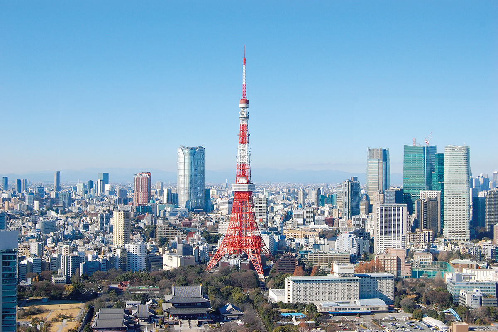
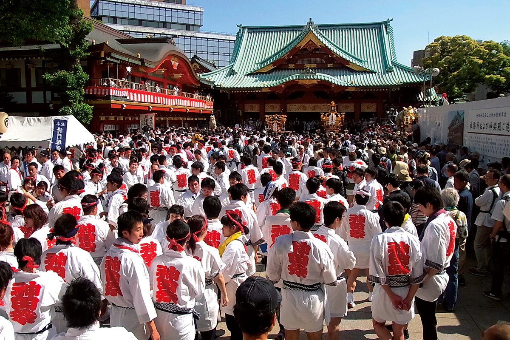
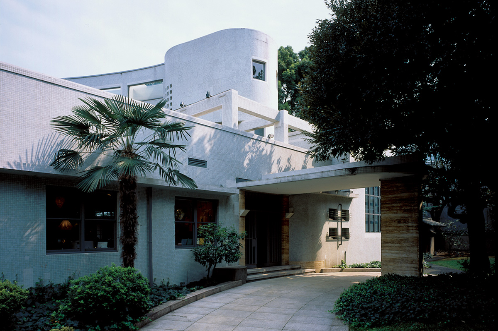
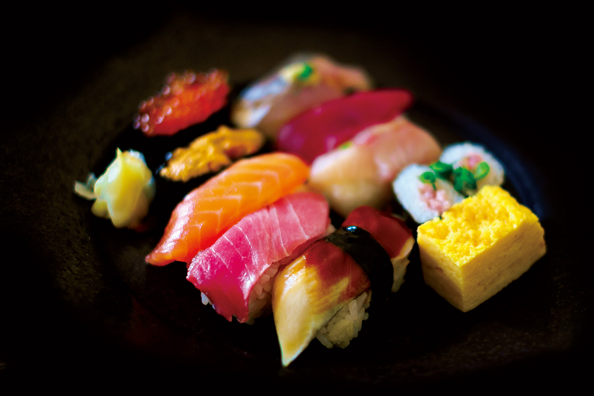
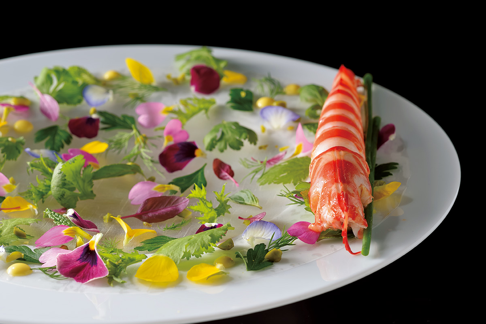
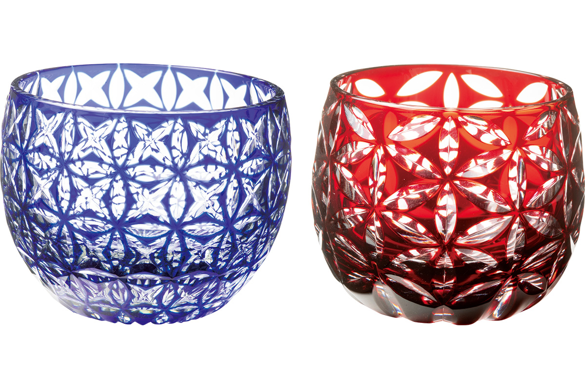
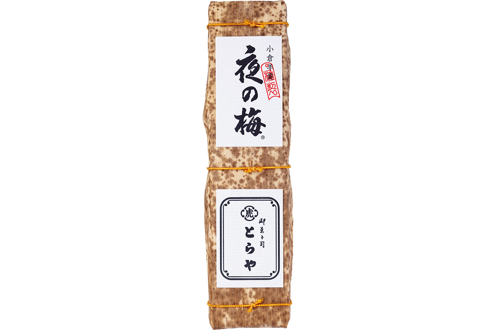
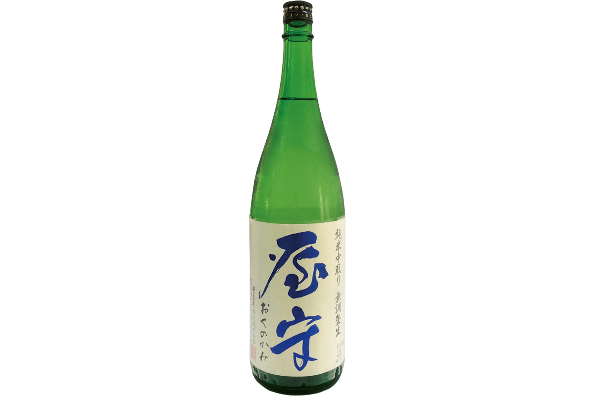
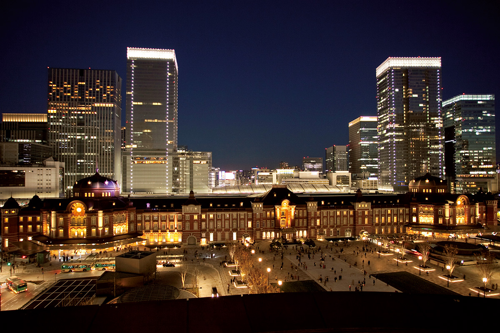

Префектура Токио
Токио: башня, старый вокзал и суши у прилавка

Красно-белая башня Токио поднимается над городом: вокруг неё на километры тянутся кварталы, а впереди видны крыши старого храма.
Город, где старый храм стоит между небоскрёбов, где вокзал стал гостиницей, а суши нигири придумали именно здесь. Рассказываем, за чем ехать в Токио.
О префектуре
Город, который четыре века назад назывался Эдо
Токио делится на три части: 23 особых района, район Тама на западе с 26 городами, пятью посёлками и восемью деревнями, и островные территории, то есть острова Идзу и архипелаг Огасавара в океане. Это столица страны и один из крупнейших городов мира.
Столичная история начинается в 1603 году, когда Токугава Иэясу основал здесь сёгунат Эдо: сёгунат это военное правительство, которое почти три века управляло страной от имени императора. Город Эдо, названный по имени правительства, стал центром политики и культуры и быстро разросся; порядок сохранялся до 1867 года, когда власть вернули императору. В 1868 году замок Эдо передали императорскому дому, переименовали в Токийский замок, и он стал дворцом. После отмены княжеств появилась префектура Токио, а в 1943 году префектура и город Токио объединились в мегаполис Токио.
Символический знак города принят в 1989 году: это первая буква английского названия Tokyo в центре и три одинаковые дуги зелёного цвета, которые говорят о движении, расцвете и покое.
Что посмотреть
Башня, с которой видно весь город
Телевизионная башня Токио
Башня высотой 333 метра построена как антенна для теле- и радиовещания. На отметках 150 и 250 метров есть смотровые площадки, откуда город видно на все четыре стороны сразу. Внизу работает «Футтаун» с магазинами и кафе.
- Адрес
- 4-2-8 Shibakoen, Minato, Tokyo
- Телефон
- +81 3-3433-5111
Праздники
Праздник, который бывает раз в два года
Канда-мацури
Это один из трёх главных праздников Японии. В главный год по улицам идёт большое шествие синко-сай, то есть вынос божества из храма, а потом начинается микоси-мияири: около двухсот больших и малых микоси, переносных святилищ с божеством внутри, проносят по кварталам, и любой желающий может взяться за шест и помочь их нести.

- Период
- раз в два года, середина мая
- Место
- святилище Канда-Мёдзин, 2-16-2 Sotokanda, Chiyoda, Tokyo
Другие праздники
- Праздник Санно, летний праздник святилища Хиэ
- Праздник Сандзя в Асакусе, шествие с микоси по кварталам старого города
- Фейерверк на реке Сумида, большой летний фейерверк над водой
Музеи и архитектура
Особняк, который стал музеем современного искусства
Музей Хара
Здание построили в 1938 году как дом промышленника Хара Кунидзо, а позже переделали в музей современного искусства. Внутри сохранилась необычная планировка с плавными дугами, так что сам дом стал частью экспозиции. Музей работал до января 2021 года.

- Адрес
- 4-7-25 Kitashinagawa, Shinagawa, Tokyo
- Телефон
- +81 3-3445-0651
- Сайт
- haramuseum.or.jp
Что ещё посмотреть
- Музей искусств «Тэйэн», музей в бывшем дворце принца, с садом
- Национальный музей западного искусства, собрание европейской живописи в парке Уэно
- Храм Цукидзи-Хонгандзи, храм с необычным индийским куполом
Местная кухня
Суши, которые придумали в Эдо
Эдомаэ-дзуси
Именно в Эдо, то есть в нынешнем Токио, появились суши нигири: рыбу перед подачей подсаливают, маринуют в уксусе или соевом соусе, а рис заправляют уксусом. Так рождается вкус, где каждый кусочек собран из двух частей: рыбы и риса, и съесть его нужно сразу, пока рис не остыл.

Что ещё попробовать
- Тянко-набэ, густой набэ, то есть блюдо, которое варят в одном горшке за столом, с мясом, рыбой и овощами
- Фукагава-дон, рис с моллюсками и зеленью
- Мондзя-яки, жидкая лепёшка из капусты и муки, которую жарят на решётке прямо за столом
Где поесть
Ресторан, где ужин собирают заново
Ресторан Такасава
Шеф Такасава переосмысляет японские продукты и традиции и подаёт авторские блюда: меню здесь строится вокруг одного сюжета, а не вокруг набора привычных перемен. Шеф ещё и старший сомелье, поэтому вино подбирают сами хозяева. Столики только по предварительной записи.

- Адрес
- 3-5-2 Akasaka, Minato, Tokyo, 2F Sanyo Akasaka Bldg
- Телефон
- +81 3-3505-5052
- Время работы
- с 18:00, последний заказ в 21:00
- Выходные
- воскресенье и праздники
- Сайт
- takazawa-y.co.jp
Ремёсла
Стакан, гранёный вручную
Стаканы эдо-кирико из магазина Касё
Эдо-кирико это стеклянные изделия с гранёным узором: мастер снимает фаски по трафарету, поэтому рисунок ловит свет изнутри и стакан играет даже при свече. В магазине Касё кроме традиционных узоров делают свои, более тонкие, и полируют грань вручную.

- Справки
- магазин Касё, главная лавка в Камэйдо
- Телефон
- +81 3-3682-2321
- Сайт
- edokiriko.co.jp
Что привезти
Мармелад из бобов и сакэ без фильтрации
Ёкан «Слива в ночи»
Это ёкан, то есть плотный желеобразный мармелад из бобовой пасты, главная сладость старого дома Торая. Массу готовят из красных бобов адзуки с кусочками бобов, а название «слива в ночи» пришло из вида среза: кусочки бобов в тёмном желе и правда похожи на цветы сливы в темноте. Одна длинная форма стоит 3024 иены.

- Телефон
- +81 120-45-4121
Сакэ «Оку-но-ками»
Воду для закваски здесь поднимают из-под земли: она из подземных потоков горы Фудзи. Сакэ разливают без фильтрации и без добавления воды, поэтому вкус получается плотным и чистым. Бутылка 720 миллилитров стоит 1606 иен.

- Телефон
- +81 42-391-0601
Где остановиться
Отель, который встроили в старый вокзал
Отель «Токийский вокзал»
Гостиница занимает часть исторического здания вокзала Токио со стороны Маруноути: красный кирпич, высокие потолки, люстры. Отсюда удобно выходить к поездам, а вид из окон на площадь и город стоит отдельного вечера.

- Адрес
- 1-9-1 Marunouchi, Chiyoda, Tokyo
- Телефон
- +81 3-5220-1111
- Комнат
- 150
- Цена
- от 42 262 иен за ночь за номер, налоги и обслуживание включены, городской сбор не включён
Местный диалект
Как здесь говорят «очень вкусно»
- фунтоо ни умээ караочень вкусно
- сидээ котон, наттиматта ёслучилось что-то ужасное
- бэраммэ, нани иттэя гандабалбес, что ты говоришь
Рекорды
В чём Токио первый
- №1 национальные сокровища: первое место по числу
- №2 парки: первое место по числу
- №3 городская агломерация: крупнейшая в мире по населению
Вопросы и ответы
Что ещё спрашивают о Токио
Как зовут собаку рядом с памятником Сайго Такамори в парке Уэно?
Цун. Сайго, один из деятелей переворота 1868 года, был известен любовью к собакам, и скульптура изображает его выходящим на охоту с собакой. В жизни Цун была самкой сацумской породы, но на памятнике это самец, и делал его другой скульптор, не тот, кто отлил самого Сайго.
Сколько островов у Токио?
Одиннадцать. Это острова Идзу, а именно Осима, Тосима, Ниидзима, Сикинедзима, Кодзусима, Миякэдзима, Микурадзима, Хатидзёдзима и Аогасима, и два острова архипелага Огасавара: Титидзима и Хисима. Вокруг дикая природа, и на каждом острове своя культура.
Справочник
Токио в цифрах
| Центр префектуры | район Синдзюку |
| Города и посёлки | 23 района, 26 городов, 5 посёлков, 8 деревень |
| Площадь | 2194 кв. км |
| Население | 13,82 миллиона человек |
| Плотность населения | 6300,0 человека на кв. км |
| Туристов за год | 265,39 миллиона |
| Дерево префектуры | гинкго |
| Цветок префектуры | сакура сорта сомэй-ёсино |
| Птица префектуры | чайка юрикамомэ |
| Средняя температура | +16,8 |
| Максимум | +32,7 |
| Минимум | +0,6 |
| Осадки | 1446 мм |
| Ясных дней | 34 |
| Дождливых дней | 103 |
| Снежных дней | 11 |
| Онсэнов | 21 |
| Гостиниц и рёканов | 2435 |
| Музеев искусств | 86 |
| Музеев | 186 |
| Митиноэки, придорожных станций | 1 |
| Национальных сокровищ | зал Дзидзо-до храма Сёфукудзи и другие, всего 281 |
| Важных культурных ценностей | 2806 |
| Исторических мест | 48 |
| Природных памятников | 15 |
| Всемирное наследие | постройки Ле Корбюзье и архипелаг Огасавара |
| Национальные парки | Титибу-Тама-Кай, Огасавара, Фудзи-Хаконэ-Идзу и другие, всего 4 |
Природные памятники
- Мегро, редкая певчая птица, которая живёт только на одном острове
- Бывшая императорская усадьба Сироканэ, парк с сохранившимся лесом
- Остров Тори-сима, вулканический остров, где гнездятся морские птицы
- Альбатрос, большая морская птица, которую здесь охраняют
- Аллея кедров у ворот Баба, старая аллея перед святилищем
- Скала Кобэ, скальное обнажение в ущелье